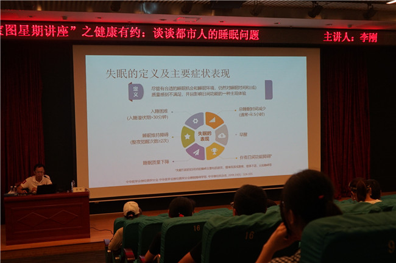

2019年6月16日下午在宝安区图书馆报告厅2举办了主题为“谈谈都市人的睡眠问题”健康有约系列讲座，主讲嘉宾是深圳市人民医院神经内科副主任医师、副教授李刚。
李老师在讲座中告诉读者失眠是由何而来，发病机制及临床表现，在日常生活中如何预防失眠，以及失眠以后要如何治疗，在饮食和日常生活习惯上给予了建议和指导。
李老师提到睡眠卫生可以起到一定的治疗作用，包括： 睡前4-6小时内避免接触兴奋性物质，如咖啡，浓茶，吸烟等； 睡前不要饮酒，不能利用酒精帮助入睡； 每日规律安排适度体育锻炼，睡前3-4小时避免剧烈运动； 睡前不宜暴饮暴食或进食不易消化的食物； 睡前1小时内不做容易引起兴奋的脑力劳动或观看容易引起兴奋的书籍和影视节目； 卧室环境应该安静、舒适、光线及温度适宜； 保持规律的作息时间。
讲座结束以后，李老师和读者互动，解答了读者关于失眠方面的疑惑，受到了读者的欢迎。
